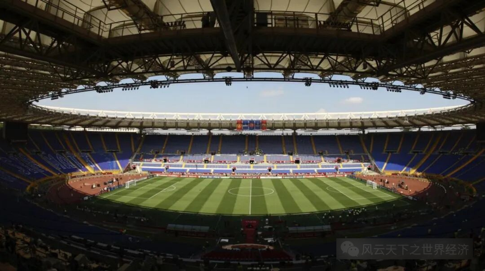
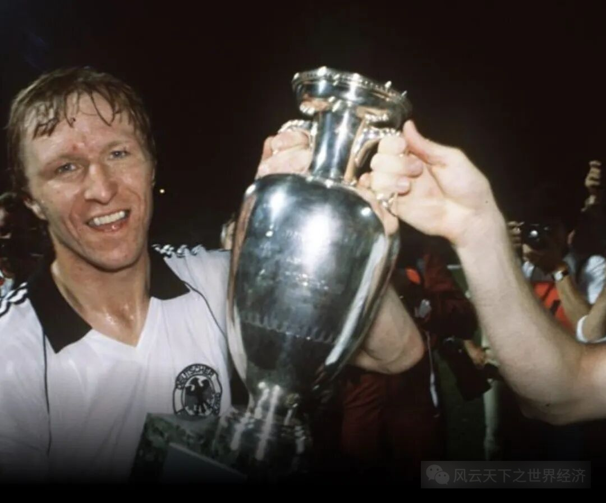
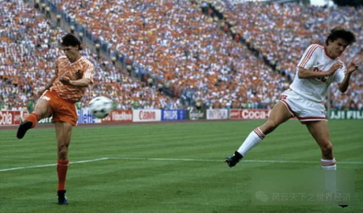
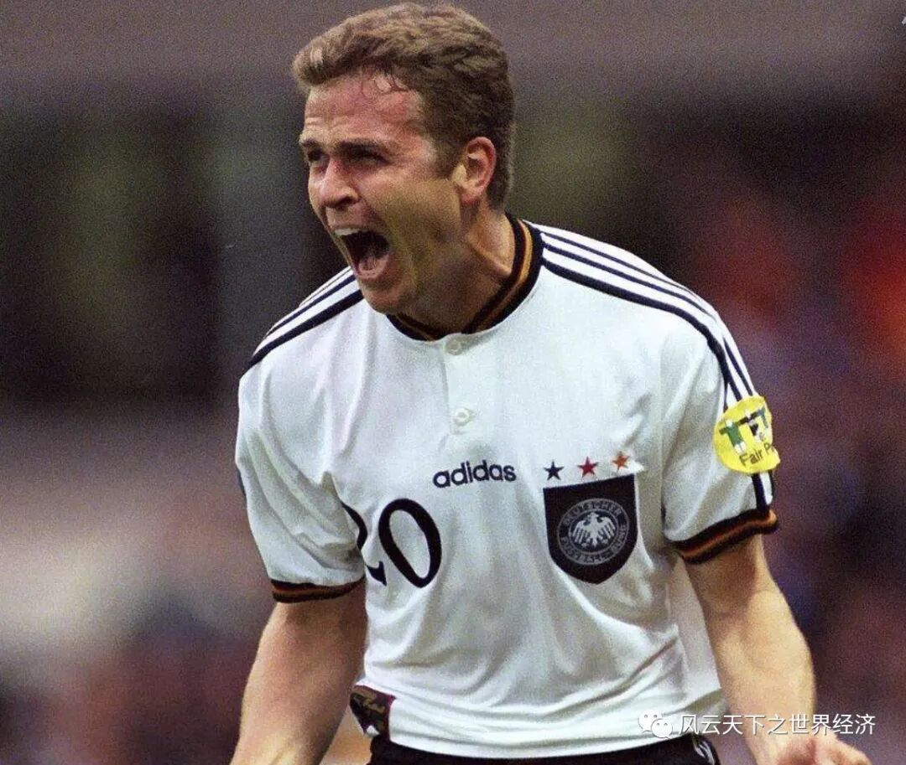
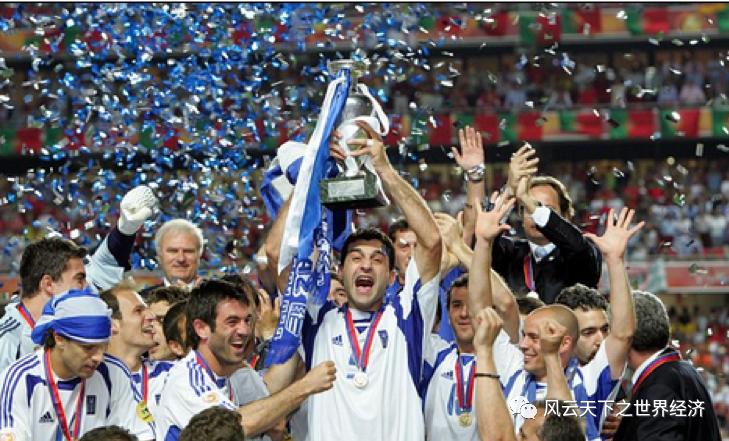
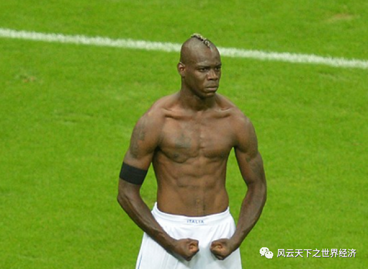
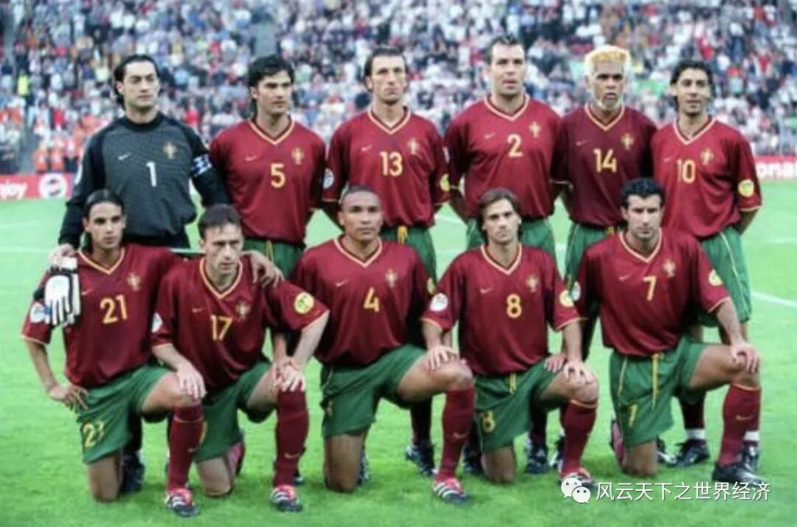
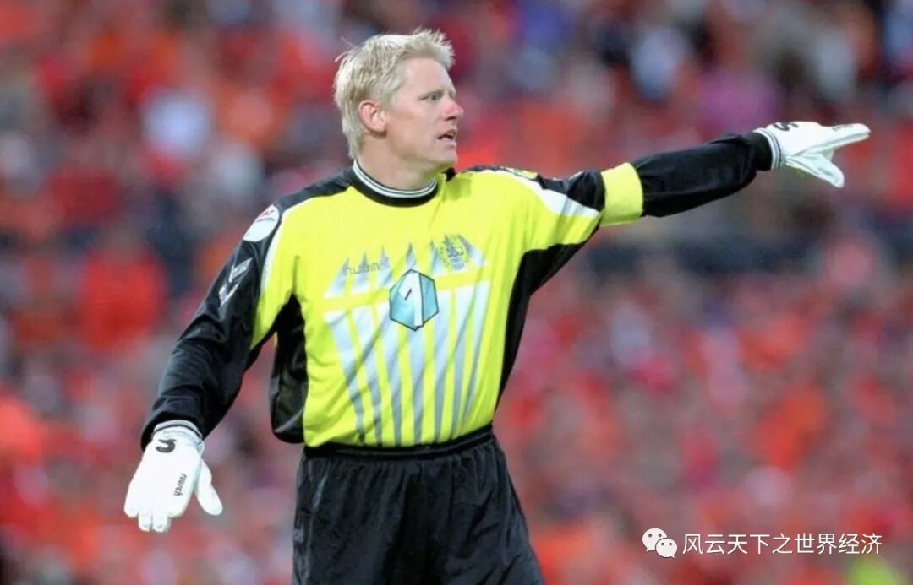
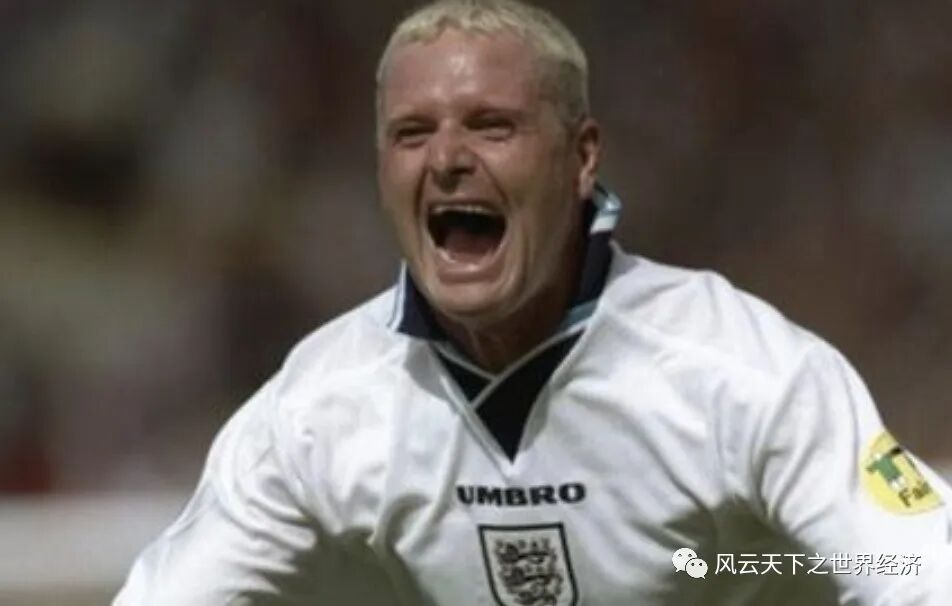

北京时间2020年6月13日凌晨3点，罗马奥林匹克球场，随着裁判的一声哨响，本届欧洲的揭幕战在意大利和土耳其之间打响。

罗马奥林匹克球场
但是，由于这场突如其来并肆虐全球的新冠肺炎疫情，让万千球迷期待已久的哨音终于没有在亚平宁半岛响起。
那些等待续写的绿茵传奇，那座等待被高高举起的象征荣耀的德劳内杯，那些回响长空的忘情呐喊，以及那些啤酒和烤肉交织的酣畅淋漓，如今只能沦为我们的仲夏夜之梦。

1980年 西德队捧起德劳内杯
在大多数球迷心目中，欧洲杯有着特殊的意义，他代表着当今足球运动的最高水平，当然也是一场向现代足球发源地的致敬之旅。
但是今年，这场伴随我大半个人生的四年之约并未如期而至，落寞注定将弥漫这个没有足球的夏季，剩下的只有那些一闪而过的经典瞬间：范巴斯滕的零度角凌空抽射、神秘之师希腊上演的大卫战胜哥利亚的神话、比埃尔霍夫的金球致胜、超级马里奥巴洛特利单骑救主......

范巴斯滕凌空抽射

1996 比埃尔霍夫金球致胜

2004 希腊神话上演

2012 巴洛特利单骑救主
对我个人而言，整整二十年前，千禧年的欧洲杯成为我大学时代的最后记忆。也是在一场不落地看完那届欧洲杯之后，我写下了下面的文字作为对青春的留念，因为它来自22岁的自己。
-----------------------------20年分割线--------------------------------
欧洲2000：一个足球世纪的终结与另一个足球世纪的来临
——欧洲杯评传
一直以为，如果仅仅从足球本身的意义来看，欧洲杯无疑是世界上最顶尖的赛事。不仅是因为欧洲是现代足球的发源地，更重要的，是欧洲足球几乎融合了世界最前卫的技战术特点而形成众多流派。我们可以说世界杯最能体现“足球无疆界”的要义，但也正是由于其广泛的地域性，使得世界杯无法占据现代足球的制高点。
（一）技战术篇
2000年欧洲杯展示给世人的欧洲足球，显然具有鲜明的“流派”特色。从技战术上来说，欧洲足球的“南欧派”和“北欧派”泾渭分明。从整个比赛的过程来看，我们不能单纯的说到底是“南欧派”还是“北欧派”取得了最后的胜利。
“北欧派”的特点强调用整个身体踢球，强调比赛中的身体对抗性，最常用的评价是“作风硬朗”，而脚法则逐渐沦落到次要的地位。“北欧派”很有古典色彩，代表了一种传统的打法，早在两个世纪以前的英国，就已占据了足球的主流。其中最具代表性的当然是有“北欧海盗”之称的挪威队。它的“力量”足球踢得太纯了，以至于像索尔斯克亚这样的球员在挪威队几乎没有用武之地。
“南欧派”，也就是国内口碑甚佳的“欧洲拉丁派”，由于欧洲与拉美的特殊殖民历史，我们可以将这一派别理解为南美足球的变种。在上个世纪初，“欧洲拉丁派”处于非主流的地位，但随着足球的进化，野蛮作风开始从足球中剥离，走向另一条发展之路，那就是现代橄榄球。目前，“欧洲拉丁派”尚不能独扛足球大旗，但却为足球的发展指明了方向。在2000年欧洲杯上，“技术型”足球最有力的代表是西班牙和葡萄牙队，其中葡萄牙队在神奇般战胜英格兰队后，被授予“欧洲巴西队”的称号。其实，从本质上来说，南斯拉夫队更是一支技术性的球队，是又太缺乏凝聚力和激情；可以说，南斯拉夫人除了技术之外，一无所有。
在所有倡导“技术流”的欧洲球队中，来自西欧的荷兰队是一个变种，他们的足球传统虽然与“力量型”打法有着相当密切的渊源，但是又融合了鲜明的技术性打法的特点。如果要将力量和技术做一个比较的话，荷兰队的力量能占70%，而技术只占30%。对另一支变种球队---法国队，它的技术风格，几乎与荷兰队是“一母同胞”，其中的差别就在于法国人更重视技术，而力量次之；也许，正是这微小的差别成全了法国人。
近年来，不少人都在企盼欧洲足球、甚至是世界足球走向融合。但是，2000年欧洲杯至少在技战术方面并没有给出我们类似的答案。试想，如果代表世界最高水平的欧洲足球成为所谓“大一统”的产物，那么这个“世界第一运动”的观赏性和生命力，恐怕也就随之减弱甚至消亡了。
（二）球队篇
2000年欧洲杯上，可以称为“没落贵族“的有两支球队：德国队和英格兰队。这两支欧洲传统强队在短短的二十年中迅速衰老。成为宴席上的狗肉，有他没他都可以摆一桌。
向来德国队被称为“生锈的战车”，而这仅仅是一个年龄老化的问题；但英格兰队可以被称为“腐朽的战车”，它的战术风格几乎与上个世纪没有什么分别，英国绅士的固执性格由此可见一斑。在技术流上升的时候，英国人仍然醉心于他们的“打鸟式”（长传冲吊）打法，不肯相信足球原来也可以在地上滚。
英式足球虽然腐朽，但是只要敢于改革，可以在几年内走向全面复苏；但是德国队就不同了，他们的问题不仅仅在于技战术思想，而是面临着一个年龄上的断层——极端的后继无人。马特乌斯代表国家队出场150次的记录，是以整个德意志的没落为代价的。曾经作为欧洲三大联赛的德甲，几乎已没有多少看客，造成这一后果的原因可以在民族的性格中寻找：德国人太保守与死板了。
斯洛文尼亚队被有些媒体戏称为“农民进城”，但首战对阵南斯拉夫队，充分证明了那句话：无产阶级绝不是好欺负的。
就在几年前，提起葡萄牙队，大家也许还仅仅知道尤西比奥赫本卡菲俱乐部，那还是60年代的欧洲杯和世界杯。然而现在当人们提起菲戈、科斯塔和平托，没有人会怀疑葡萄牙才是“欧洲拉丁派”的最典型代表。

参加本届欧洲杯的葡萄牙队，其特点仍是滚动式进攻，利用技术优势进行短传渗透。在四名后卫加两名防守型前卫的防守阵容之前，是一个菱形的进攻阵容，以自由式滚动实施进攻。与1996年欧洲杯不同的是，参加2000年欧洲杯的葡萄牙队在菱形的顶点拥有一位典型的中前锋——戈麦斯，站位于菱形底部的鲁伊·科斯塔和站位于左右顶点的菲戈和平托，则在保持适当距离的情况下发动短传渗透，这种打法依然如故。
然而，后卫人才不济确实是这个国家的弱点所在。因此，葡萄牙足球虽然充满十二分的想象力，却缺乏现实主义。一句话，球踢得耐看、有趣，却无法取胜。在展开华丽而流畅的短传过程中，却找不着球门的方向---这就是葡萄牙足球。
南斯拉夫队则是政治足球的牺牲品，不说也罢。
（三）球员篇
在本届杯赛上，有三个球员的没落是以球队的没落为标志的，他们分别是哈吉、内德维德和舒梅切尔。
没了劳德鲁普兄弟的丹麦队犹如被抽筋剥骨，舒梅切尔独木难支。也许就是有了舒梅切尔，丹麦队才敢踢如此纯洁的足球——不管对手是强是弱，就是进攻。然而，少了小劳德鲁普的丹麦队锋线，虽有托马斯和桑德联袂出演，但却令人失望。其中托马斯——这位费因诺德队的前锋，丧失了丹麦队三场比赛的最黄金进球机会，而桑德也是完全找不到在沙尔克04队的进球感觉。
这种攻势足球的结果使舒梅切尔经常要破解单刀难题，三场球净输8球，其中6个球是被对手单刀攻入。所以，丹麦队要受到谴责的应该是除舒梅切尔之外的所有队员；不管怎么说，舒梅切尔是足球史上最伟大的门将之一，就像曼联的伟大一样。

舒梅切尔
其实在小组赛上，捷克队唯一可与法国队相提并论的就是以内德维德领衔的中场；另外还有波波斯基，这位上届捷克队夺取亚军的功臣在这一场比赛中发挥得淋漓尽致。最后一场他在空中卸下传球，然后及时传给插上的斯米切尔（利物浦队），造成后者轻松打入空门，堪称欧洲杯经典之作。但是，他们毕竟老了，所以捷克队只能赢得人们的同情。
罗马尼亚队虽杀入四强，但哈吉却以一张红牌结束了其在国家队的最后之旅，着实令人扼腕。
任何球队都需要新陈代谢。与一批老球员的没落相对应，一批新星正在冉冉升起。由于他们没有辉煌的历史可以提及，我们只列一下他们的名字：斯洛文尼亚队的德扎霍维奇、南斯拉夫队的米洛舍维奇、荷兰队的孔塞桑……
另一个值得注意的群体是攻击型前卫们，像齐达内、岑登、门迭塔、奥维马斯、费戈……他们几乎成为进攻的主角。技术统计显示，本届杯赛上共进81个球，其中28个进球是攻击型前卫所为。
由于“四四二”阵形的大兴其道，使得前锋在很大程度上成为迷惑对手的障眼物，他们牵制对方后防球员，为中后场球员制造攻门的机会。另外这些攻击型前卫很多有着非凡的脚法和速度，这里首推齐达内，你极少会看到球从他的脚下丢掉，这不由让人想起英格兰的坏小子，有着“万有引力之神”之称的加斯科因。

加斯科因
（四）几件上帝的作品
一、法西之战。从本意来说，我向来不太喜欢法国队，但是他们的运气势不可挡，所以本场还是才法国队胜。
事实证明，法国队的技术要逊于西班牙队，它的优势主要靠硬朗的身体创造出来的。在法国左路，有图拉姆防守；从技术的角度来看，图拉姆是目前世界上唯一能一对一防住罗纳尔多的人。但是在穆尼蒂斯如鬼魅般的盘带面前，图拉姆开始有点找不着北，屡屡被对方突破，甚至造成一记点球。
自从德约卡夫在角度几乎为零的情况下打入一记刁钻的球后，胜利的天平开始向法国队倾斜。而令西班牙人心碎的第89分钟终于来临，劳尔疲惫的金左脚将点球踢向空中……
其实，西班牙在实力上绝不逊于法国队， 下半时极有挽回的可能。但右前卫门迭塔被利扎拉祖看死了，乌尔塞斯虽然也不错，但是这些都没有用，因为上帝主宰了这一切。
二、意荷之战。记得在看荷兰比赛直播时，当荷兰队4：0领先时，一位网友说：真担心荷兰队在这一场球赛中把所有的球都进光了。果不其然，荷兰队得到了报应。
不知道在足球比赛中是否还有比点球更容易进的球，但杰佐夫却说：”在重大比赛中，任意球要比点球好进的多”。我也不想把托尔多列为最佳门将，因为踢过足球的人都知道，球队不存在“扑点球专家”。
而意大利队则给人一种又爱又恨的感觉，他们的马桶式足球几乎看不出丝毫美感，却能将防守足球演绎得如此精妙，也不得不佩服意大利人的天赋。
“弱队出门将”，意大利有个好门将，但意大利队绝不是弱队。
“得饶人处且饶人”，不要“得势不饶人”，荷兰杀南斯拉夫杀得太狠，连上帝也得罪了，我们只能如此解释。
（五）教练篇
梅勒尔和里杰卡尔德代表了两种完全相反的教练形象，我一样喜欢他们。